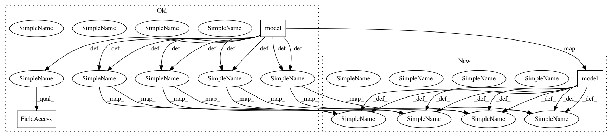

c5504174948be1855a9636a416524cc7cb9dabca,examples/text_classification/tutorial_imdb_fasttext_dynamic_eager.py,,train_test_and_save_model,#,119
Before Change
// forward and define the loss function
with tf.GradientTape() as tape:
y_pred = model(tl.prepro.pad_sequences(X_batch)).outputs
cost = tl.cost.cross_entropy(y_pred, y_batch, name="cost")
// backward, calculate gradients and update the weights
grad = tape.gradient(cost, model.weights)
optimizer.apply_gradients(zip(grad, model.weights))
// calculate the accuracy
predictions = tf.argmax(y_pred, axis=1, output_type=tf.int32)
are_predictions_correct = tf.equal(predictions, y_batch)
accuracy = tf.reduce_mean(tf.cast(are_predictions_correct, tf.float32))
train_accuracy.append(accuracy)
if len(train_accuracy) % N_STEPS_TO_PRINT == 0:
After Change
// forward and define the loss function
with tf.GradientTape() as tape:
y_pred = model(tl.prepro.pad_sequences(X_batch))
cost = tl.cost.cross_entropy(y_pred, y_batch, name="cost")
// backward, calculate gradients and update the weights
grad = tape.gradient(cost, model.weights)
optimizer.apply_gradients(zip(grad, model.weights))
// calculate the accuracy
predictions = tf.argmax(y_pred, axis=1, output_type=tf.int32)
are_predictions_correct = tf.equal(predictions, y_batch)
accuracy = tf.reduce_mean(tf.cast(are_predictions_correct, tf.float32))
train_accuracy.append(accuracy)
if len(train_accuracy) % N_STEPS_TO_PRINT == 0:
In pattern: SUPERPATTERN
Frequency: 4
Non-data size: 3
Instances
Project Name: tensorlayer/tensorlayer
Commit Name: c5504174948be1855a9636a416524cc7cb9dabca
Time: 2019-02-21
Author: jingqing.zhang15@imperial.ac.uk
File Name: examples/text_classification/tutorial_imdb_fasttext_dynamic_eager.py
Class Name:
Method Name: train_test_and_save_model
Project Name: tensorlayer/tensorlayer
Commit Name: a6652b0c1997bb47dd502bf674e0b3b9b2d09d23
Time: 2019-05-16
Author: 1402434478@qq.com
File Name: examples/reinforcement_learning/tutorial_cartpole_ac.py
Class Name: Critic
Method Name: learn